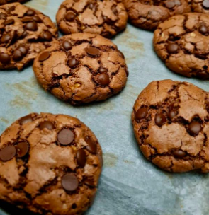

Mutlu çarşamba gününden merhaba tatlı krizim tutunca arada yapıyorum çok güzel oluyor yarım bardak yağla efsane browniler hemen hazır geçelim tarife.
Tarif Sahibi: ⭐ KENDİ MUTFAĞININ ŞEFİ ⭐

Browni Lezzettinde Kurabiye Sadece Yarım Çay Bardağı Sıvı Yağıyla Tarifi İçin Malzemeler
- 1 adet yumurta
- 1 çay bardağı şeker
- Yarım çay bardağı sıvı yağ
- 1,5 yemek kaşığı kakao
- 1 paket vanilya
- 1 çay bardağı ceviz içi veya fındık
- 1 su bardağı nişasta
- Yarım su bardağından biraz fazla un
- 2 çay kaşığı kabartma tozu
- 1 çay bardağı damla çikolata
- Yağ, şeker, yumurtayı tel çırpıcıyla şeker eriyene kadar çırpın.
- Kakao ve vanilyayı ekleyin, çırpın.
- Un, nişasta, kabartma tozu, ceviz ekleyin, yoğurun.
- En son damla çikolatayıda ekleyip, yoğurun, şekil verin.
- 180 derece fırında 10 dakika pişirin afiyet olsun😍